BytesOfProgress
Hacking a Nintendo 3DS
06th July 2024 / 11:00 AM
Install boot9strap and Luma3DS custom firmware onto a 3DS is actually not that difficult! I am doing this with my New Nintendo 3DS XL.
Please do NOT consider this a tutorial! The process is different for every Nintendo 3DS Edition and every firmware version. If you want to do this, please use the guide from 3ds.hacks.guide.
This is the guide / tutorial I used.
The first step was to get the SD-Card out of the 3DS and insert it inside a computer to make some modifications to the software.
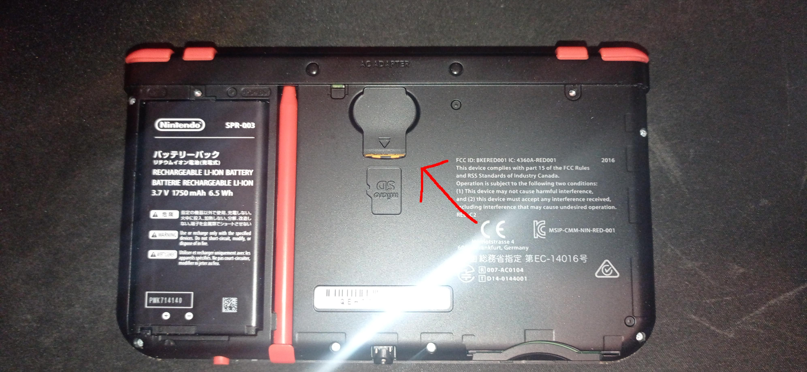
Now I powered the 3DS on and went to the System settings and check for the version I am running to choose the right method. In my case it was version 11.16.0-49E.
The next step is to download the files needed to exploit the 3DS software. In my case it were these:
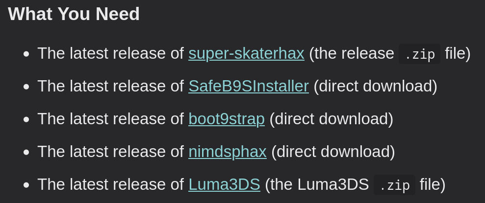
Then I needed to move files as stated in the guide on 3ds.hacks.guide.
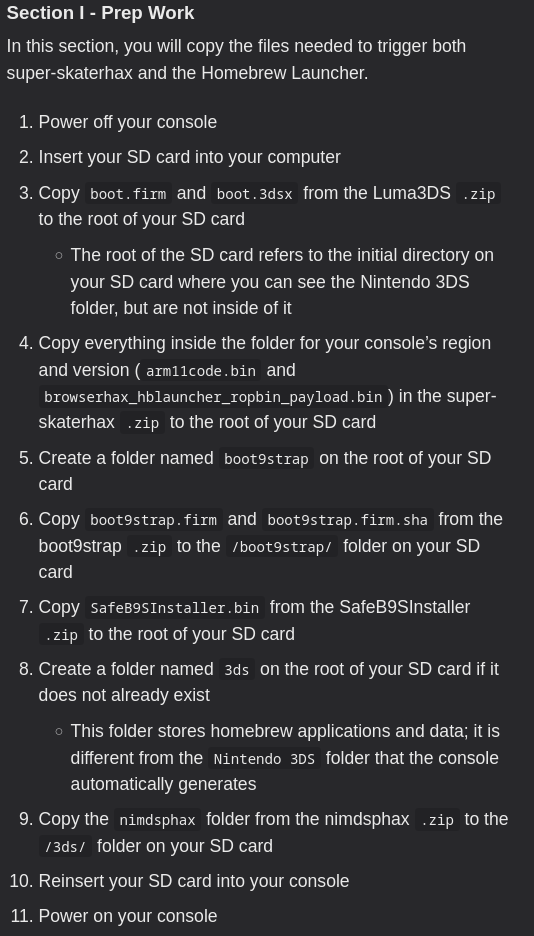
After that, I was able to continue to section 2: Visiting the browser exploit webpage, which will launch the Homebrew Launcher.
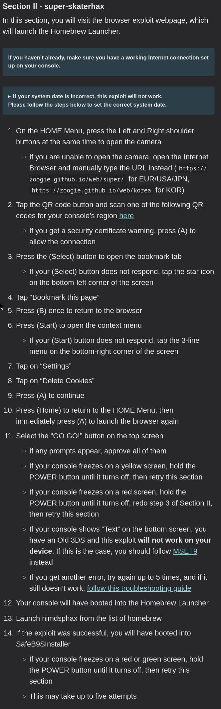
On Step 12, I successfully booted into the homebrew launcher:
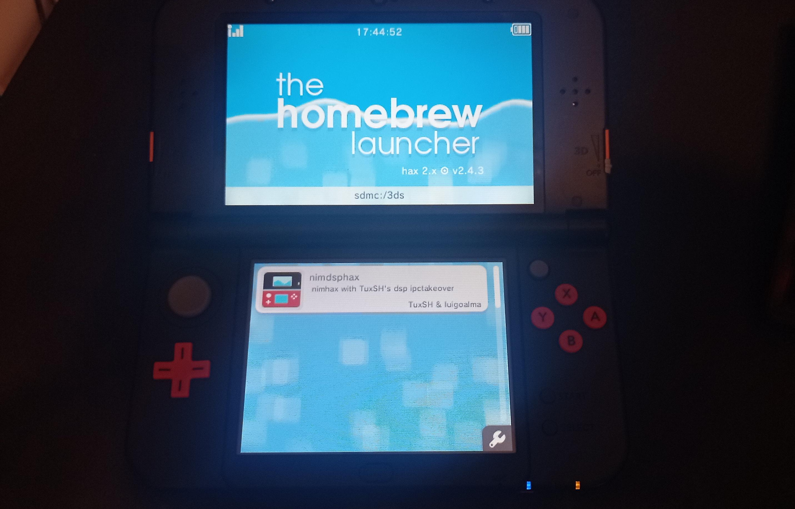
After launching nimdsphax from homebrew, I booted into SafeB9SInstaller:
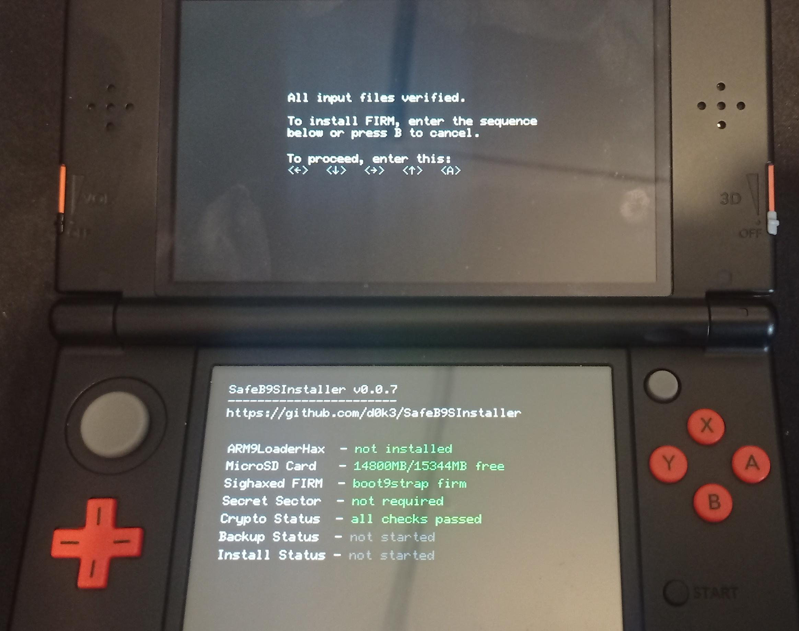
After entering the prompt, SigHaxed FIRM got installed successfully and I was ready to continue to section 3 (step 3), which involves following steps:
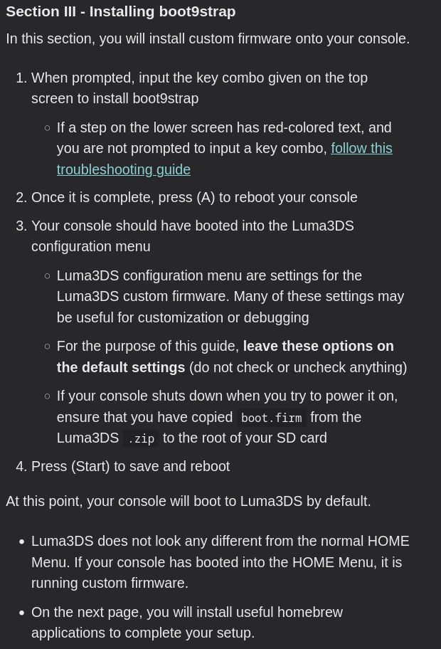
Once booted into Luma3DS, it asks to make some configurations.
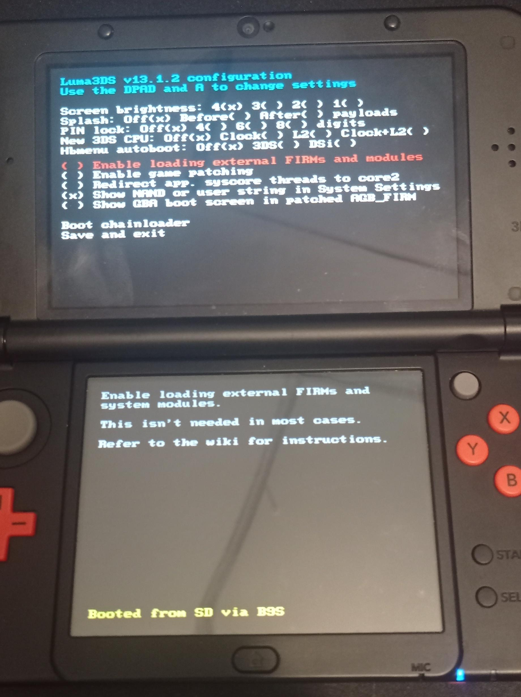
The file boot.firm is what is launched by boot9strap itself after it finishes loading off of NAND. In this case, we are using Luma3DS by LumaTeam to patch the console, allowing it to run homebrew software.
Finalizing Setup:
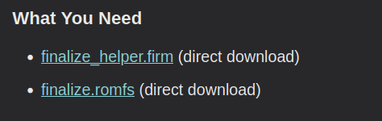
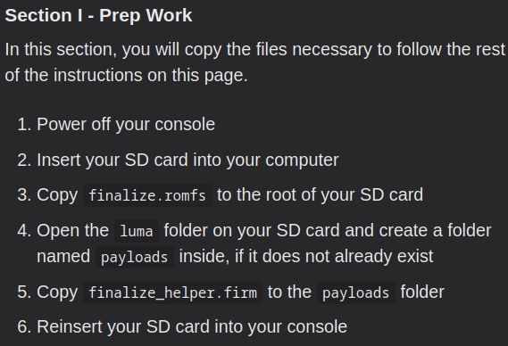
In section 2 of the finalizing part, I needed to insert the MicroSD Card back into the 3DS and configure some settings and update the system.
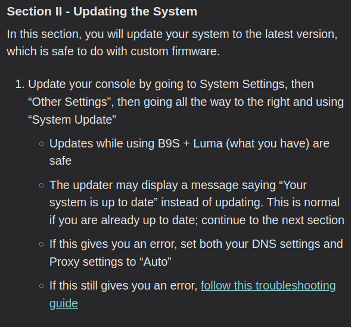
The system update succeded without issues, so its time to move on to section 3:
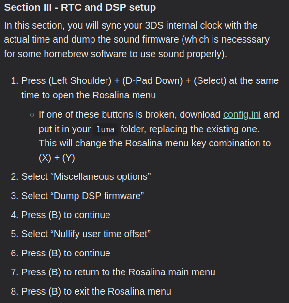
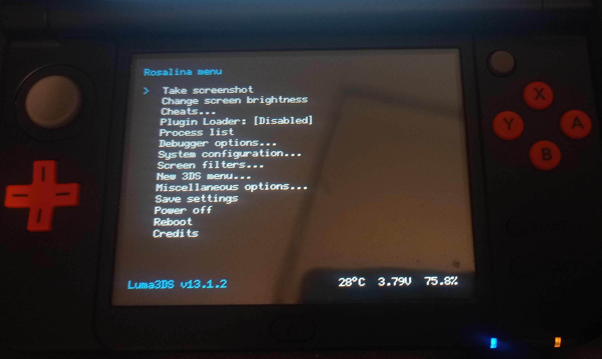
Rosalina Menu
DONE! In case of a software failure: The two SysNAND files are your NAND backup and can be used to revert your console to a working state if it is bricked by a software issue. For this case, I made a backup of my whole config.
back